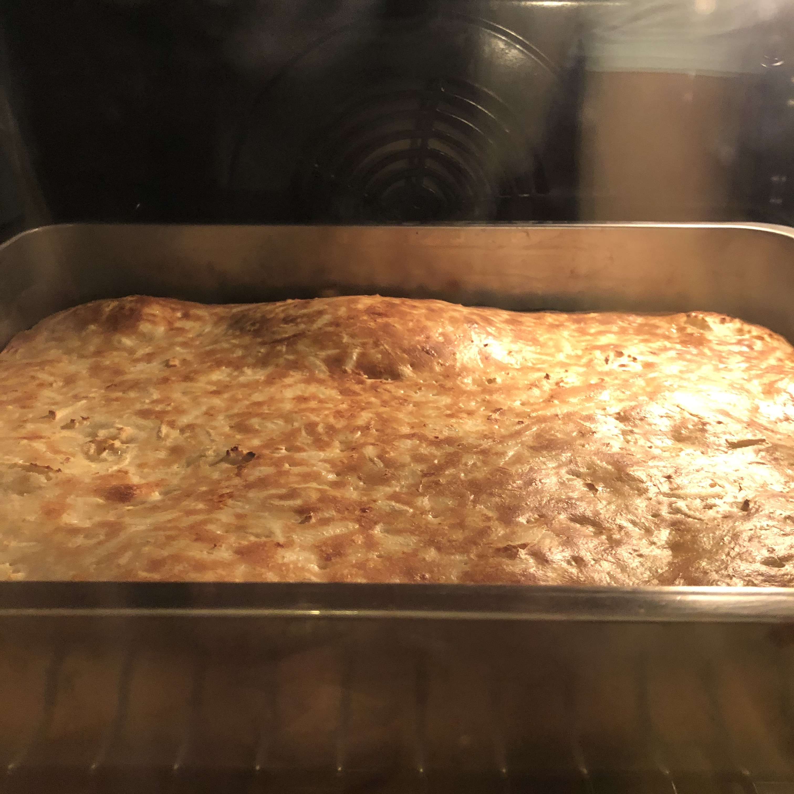

Ugnspankaka med palsternacka

ugn 225 grader
3 dl mjölk
1,5 tsk salt
3 dl vetemjöl - sikta
vispa till smet
3 ägg
3 dl mjölk till
3 dl riven palsternacka
tillsätt
lägg i smord form
30 min ugn, servera med äppelmos